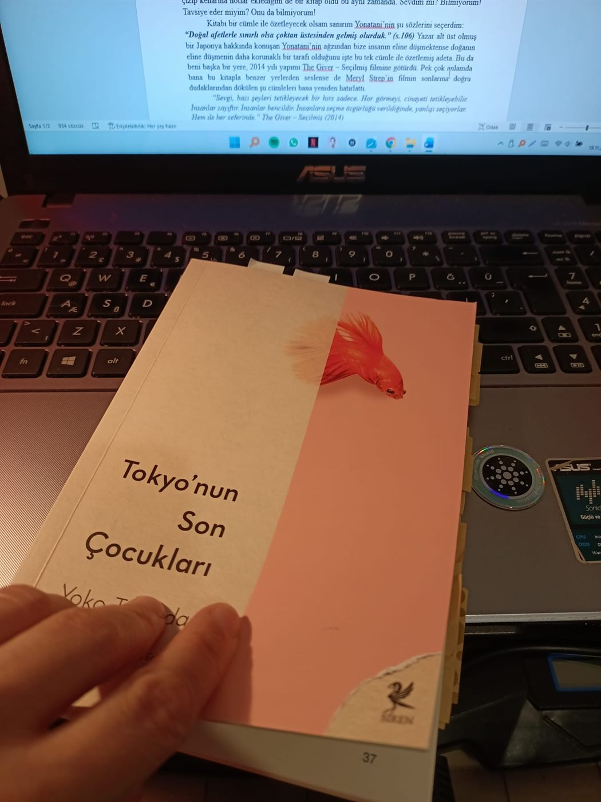
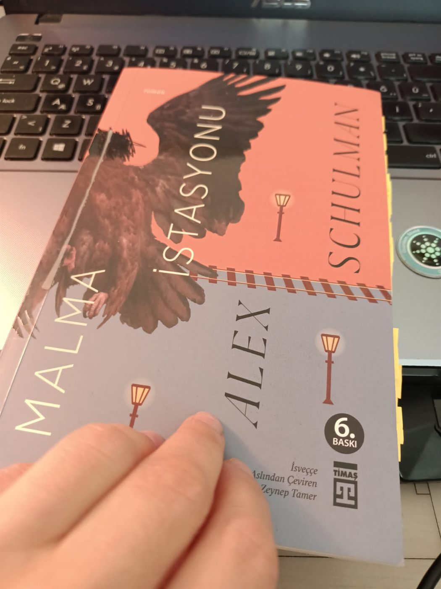
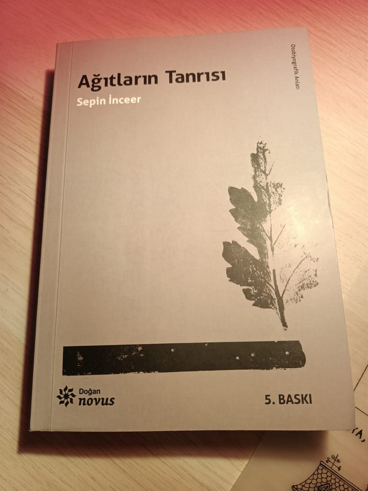

Blog · Okuduklarım & İzlediklerim
Okuduklarım & İzlediklerim
Kitaplar, filmler, diziler; iz bırakan okumalar ve seyirler.
← Tüm kategoriler
Peri Masalı - Stephen King
Stephen King'in fantastik romanı "Peri Masalı" üzerine bir okuma.

Tokyo'nun Son Çocukları
Yoko Tawada imzası taşıyan kitap H. Cam Erkin çevirisi ile Siren Yayınlarından, 2020 yılında çıkmış. Elimdeki beşinci…

Malma İstasyonu
“Çocuğunuzu ne zaman kaybedersiniz?” (s.194) Kitapta birkaç kez tekrar eden bu soru, tüm kitabın da anlatmaya…

Ağıtların Tanrısı
Ağıtların Tanrısı’nı (Sepin Sinanlıoğlu İnceer / Doğan Egmont Yayıncılık, Ocak 2021) tam basıldığı yıl okumaya hiç…